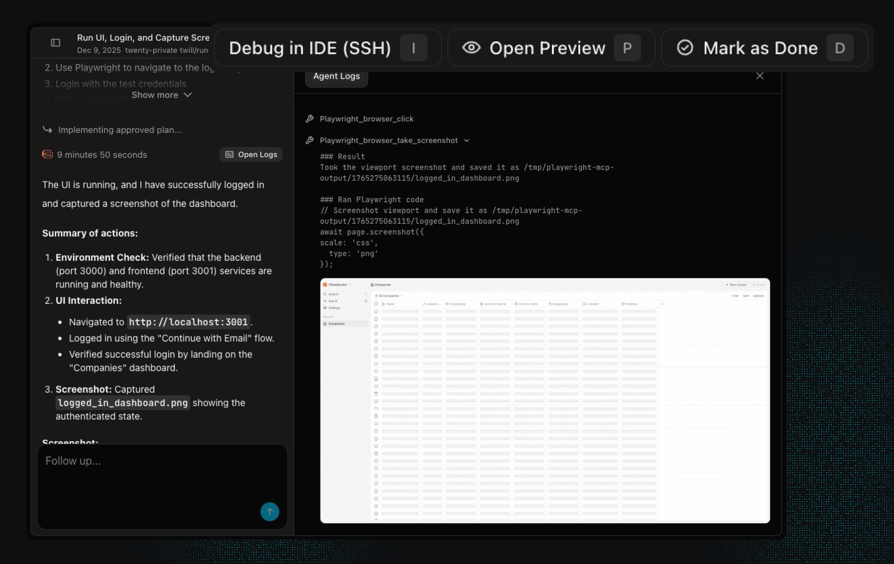

THE FRONT PAGE
EDITOR'S NOTE: As we outsource the structural integrity of our digital world to exhausted volunteers and automated proxies, one wonders if we are building a lasting cathedral or merely a very complex lean-to that we've forgotten how to repair. #The systemic fragility of the software supply chain.
The loss of a high-altitude platform in contested airspace underscores the fragility of automated surveillance chains, where a single sensor failure or kinetic intervention renders a hundred-million-dollar asset into expensive scrap. We are trading robust, manned oversight for a brittle autonomy that offers no post-mortem when the link drops.
Researchers released a specialized model trained exclusively on 1D chess—a variant so stripped-down it raises questions about whether we’ve hit peak novelty in AI benchmarks. The project’s sole practical use case appears to be testing how well models generalize from absurdly constrained environments.

YC-backed Twill.ai is pitching autonomous cloud agents that draft, test, and submit pull requests—letting engineers offload implementation while raising questions about architectural drift and the long-term cost of outsourcing craft.
After months of friction with Microsoft’s driver-signing process, WireGuard’s latest Windows release finally ships, sidestepping the bureaucratic morass that left users stranded on outdated builds. The fix arrives with a quiet tradeoff: third-party kernel drivers now bear the weight of Redmond’s scrutiny by default.
As automated patch generation lowers the barrier to entry for kernel contributions, maintainers face a deluge of syntactically correct but logically shallow submissions. The risk is a subtle erosion of the kernel's architectural integrity, traded for the convenience of fixing trivial lints that don't actually improve system stability.
MODEL RELEASE HISTORY
No confirmed model releases were detected for this edition date.